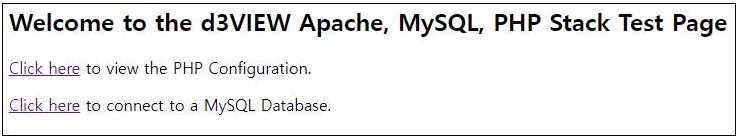
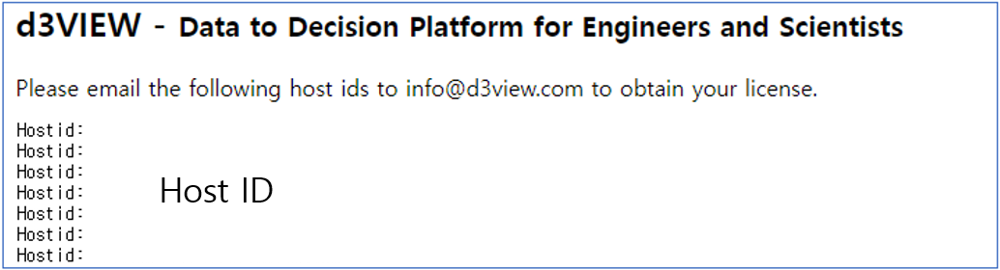
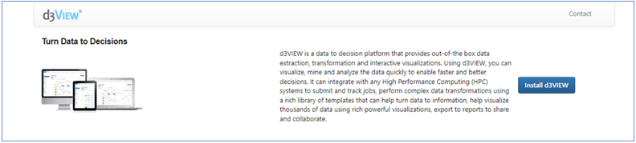

D3VIEW 시작하기
1. Installation
1.1 d3view 설치 장비 정보 제공
d3view 설치를 위해 다음의 서버 정보를 d3view 본사에 제공하고 설치 파일을 제공 받습니다.
Type and version of Operating System(Only linux)
Scheduler Type and Version
Server type (On-Premis or Cloud)
1.2 d3view 서버 설치
제공 받은 설치 파일을 이용하여 설치를 진행합니다.
d3view 이름의 사용자를 생성합니다.
d3view 이름의 그룹을 생성합니다.
d3view를 설치할 /opt/d3view 디렉토리를 생성합니다.
생성한 경로로 이동하여 설치 파일을 실행합니다.
추가로 d3ivew에서 구분되는 사용자들의 파일 저장 디렉토리를 만들어 줍니다. (ex. /storage/d3view)
Attention
d3view 설치는 root 계정으로 설치합니다.
2개 이상의 계산노드가 존재하는 서버에서 d3view를 활용할 경우 d3view 사용자는 모든 노드에 비번 없이 접속이 가능해야 합니다.
2개 이상의 계산노드가 존재하는 서버의 경우 각 노드에 마스터 노드의 /home/d3view와 /storage/d3view 경로가 공유 되어야 합니다.
1.3 서버 실행
d3view를 설치한 이후에 서버를 실행하여 d3view를 구동합니다.
{D3VIEW_PATH}/amp/hpptd/conf/httpd.conf 파일의 내용을 수정합니다.
User와 Group을 d3view로 설정합니다.
다음의 설정 변수로 이동하여 d3view가 설치된 경로에 맞게 수정합니다.
ServerRoot : “{D3VIEW_PATH}/amp/httpd”
Listen : “3080”
PHPInDir : “{D3VIEW_PATH}/amp/php/bin”
DocumentRoot & Directory : “{D3VIEW_PATH}/web”
ErrorLog : “{D3VIEW_PATH}/var/logs/error_log”
ScriptAlias /cgi-bin/ “{D3VIEW_PATH}/amp/httpd/cgi-bin/”
Directory (for cgi-bin) : “{D3VIEW_PATH}/amp/httpd/cgi-bin”
Include (for Deflate configuration) : “Include {D3VIEW_PATH}/amp/httpd/conf/extra/httpd-deflate.conf”
{D3VIEW_PATH}/amp/httpd/conf/php-fpm.conf 파일의 내용을 수정합니다.
user와 group을 d3view로 설정합니다.
d3view를 설치한 경로로 이동합니다.
d3view_server.sh 파일내 실행되는 명령어들의 경로가 올바른지 확인합니다.
./d3view_server.sh start 명령어를 입력하여 d3view를 구동합니다.
client 컴퓨터 웹 브라우저에서 http://(server_ip_address):3080을 입력하고 아래와 같이 표시되는지 확인합니다.

Attention
d3view 구성 명령어는 d3view 사용자로 구동합니다.
1.4 라이선스 발급을 위한 host id 확인
d3view의 라이선스를 발급받기 위해 d3view 서버를 설치한 장비의 host id를 확인하고 본사에 전달해야 합니다.경우에 따라 이후 과정으로 d3view application 설치 파일이 본사로 부터 제공될 수 있습니다. d3view application의 위치는 {D3VIEW_PATH}/app 경로이며 설치가 필요한 경우 제공되는 설치 파일을 {D3VIEW_PATH}/app에 위치 시키고 압축을 해제합니다.
따로 본사로 부터 application을 제공 받은 경우 {D3VIEW_PATH}/amp/hpptd/conf/httpd.conf의
DocuentRoot와 바로 아래에 있는Directory의 경로를 설치한 application의 web 경로로 변경합니다.{D3VIEW_PATH}/amp/php/bin/php.ini 파일에 정의 된 경로가 올바른지 확인하고 zend 설정이 다음과 같은지 확인합니다.
zend_extension=”{D3VIEW_PATH}/amp/php/lib/php/extensions/no-debug-non-zts-20090626/ZendGuardLoader.so”
zend_loader.enable=1
zend_loader.disable_licensing=0
zend_loader.obfuscation_level_support=3
zend_loader.license_path=path/to/license/3VIEW_License_XfinityInc_202122zl.zl
위 과정에서 수정이 된 경우 서버를 d3view를 재구동합니다. (ex. {D3VIEW_PATH}/d3view_server.sh restart)
Client 컴퓨터의 웹 브라우져에서 http://{server_ip_address}:3080/hostids.php를 입력하고 표시되는 host id를 확인하고 d3view 공급처에 hostid 정보를 제공합니다.

1.5 라이선스 설치
공급처로부터 발급받은 라이선스를 d3view 서버에 적용합니다.
{D3VIEW_PATH}/license 디렉토리에 위치 시키고 {D3VIEW_PATH}/amp/php/bin/php.ini 파일에서 zend_loader.license_path의 경로를 실제 라이선스 파일 위치로 설정합니다.
d3view 서버를 재구동합니다.
Client 컴퓨터의 웹 브라우져에서 http://{server_ip_address}:3080을 입력하고 아래와 같은 페이지가 표시되는지 확인합니다.

1.6 d3view 설치
라이선스 설치 과정에서 정상적으로 웹 페이지가 표시되었다면 Install d3VIEW 버튼 클릭 이후에 나타나는 입력란에 다음의 정보를 입력합니다.
User : root
Password : root
Database Name : d3view
Port : {database port number} (ex. 33060)
2 d3VIEW 설정
2.1 서버 설정
여기서 말하는 서버는 실제로 d3view 웹 페이지에서 job을 제출하고 해석이 진행되는 서버를 의미합니다. 서버는 d3view 관리자 계정으로 설정할 수 있으며 서버 설정과 관련한 설명은 d3view 아래 링크에서 확인할 수 있습니다.
https://www.d3view.com/docs/master/getting_started/Administration.html#add-an-hpc-server
Attention
관리자 계정의 아이디는 반드시 admin으로 생성하여야 합니다.
2.2 사용자 관리
d3VIEW 사용자는 관리자 계정으로 추가 및 수정등을 할 수 있습니다. 기본적인 사용자 관리 내용은 아래 링크에서 확인 할 수 있습니다.
https://www.d3view.com/docs/master/getting_started/Administration.html#users
3 LUCY 설정
설치된 서버의 환경에 따라 LUCY의 설정을 변경해야 할 경우가 있으며 설치를 진행하면서 시도했었던 내용들을 설명한다.
3.1 Xvfb.sh 설정
Xvfb.sh 시뮬레이션에서 생성된 결과들의 이미지 혹은 애니메이션을 작성하는데 필요한 display 서버 설정 및 실행 스크립트이다. lucy/bin 디렉토리에 위치하고 있다.
Issue 1 : lsprepost를 사용하는데 라이브러리 파일을 찾을 수 없다는 에러가 발생하였음.
Xvfb.sh 파일에 lsprepost 라이브러리 디렉토리를 export 하여 해결
export LD_LIBRARY_PATH={LSPREPOST_PATH}/lib:$LD_LIBRARY_PATH
3.2 get_python_path.sh 설정
get_python_path.sh는 서버의 python 경로를 얻기 위한 스크립트이다. 기본적으로 d3VIEW는 python 실행 파일과 관련 모듈들이 같이 설치된다. 사용되는 python 버전은 2.7이다.
Issue 1 : get_python_path.sh에서 python 경로를 제대로 가져오지 못함.
get_python_path.sh에서는 PYTHON_PATH 변수로 python 경로를 export 함
정확환 경로로 설정이 되지 않는 경우 임의로 python 실행 파일의 경로를 PYTHON_PATH로 설정
3.3 cronjob 설정
cronjob은 리눅스에서 일련의 작업을 스케듈링해주는 툴이며, lucy에서 서버의 상태를 주기적으로 sync 하는 등의 작업에 사용된다.
Issue 1 : d3view 웹 페이지에서 server의 상태를 주기적으로 sync 해주기 위해 작업이 필요함
lucy/bin 디렉토리에 server_sync.sh 스크립트를 작성
1#!/bin/bash 2source ~/.bashrc 3/opt/d3view/d3VIEW-CENTOS76-2.1/lucy/bin/lucy server sync -s "RNTier" > /tmp/d3view_server_sync.log
crontab -e를 입력하고 아래와 같이 라인을 추가
1*/1 * * * * {D3VIEW_INSTALL_PATH}/lucy/bin/server.sync.sh
crontab에 대한 설명은 아래 링크를 참조
crontab of JDM’s Blog
3.4 lsdyna.jinja 설정
lsdyna.jinja는 d3view 웹페이지에서 job 제출 시 ls-dyna 실행 command를 작성하는 룰이 작성된 파일로 짐작된다.
Issue 1 : 웹 페이지에서 job 제출 시 사용자가 입력하는 memory 옵션 값이 반영되지 않는 문제
lsdyna.jinja에 memory 값이 hard code 되어 있는데 이 부분을 전달되는 변수로 설정되도록 변경 \
memory={{solver_main_memory}} memory2={{solver_slave_memory}}
3.5 서버에서 사용되는 scheduler에 맞는 *.batch.jinja 파일 수정
d3view에서 제출 되는 job은 linux의 scheduler로 실행 된다. 여기서 scheduler는 SGE, PBS등의 cluster job scheduler를 의미한다.
Issue 1 : 서버에서 사용하는 job scheduler의 양식에 lucy에서 활용되는 환경변수 설정을 할 필요가 있음
기본적으로 아래와 같이 환경변수를 설정
1export SOLVER_INPUT_FILE={{ solver_input }} 2export SOLVER_VERSION={{ solver_version }} 3export SOLVER_TOTAL_NCPU={{ num_cores }} 4export SOLVER_TOTAL_NODES={{ solver_total_nodes }} 5export SOLVER_NODE_NCPU={{ solver_node_ncpu }} 6export SOLVER_PRECISION={{ solver_precision }} 7export SOLVER_MAIN_MEMORY={{ solver_main_memory }} 8export SOLVER_DECOMP_MEMORY={{ solver_decomp_memory }} 9export SOLVER_TYPE={{ solver_type }} 10export SCHEDULER_TYPE={{ scheduler_type }} 11export SCHEDULER_QUEUE={{ job_queue }} 12export SCRIPTS_BASE_DIR={{ scripts_base_dir }} 13export FROM_HOST={{ from_host }} 14export FROM_USER={{ from_user }} 15export FROM_DIR={{ from_dir }} 16export RUN_DIR={{ from_dir }} 17export RSH={{ rsh }} 18export RCP={{ rcp }} 19export RSYNC={{ rsync }} 20export HPC_SERVER={{ hpcserver_name }} 21export SOLUTION_TYPE={{ solution_type }} 22export SOLVER_JOB_NAME={{ solver_job_name }} 23export SOLVER_WORK_DIR={{ solver_work_dir }} 24export HANG_JOB_TIMEOUT={{ hang_job_timeout }} 25export HANG_JOB_TERMINATE={{ hang_job_terminate }} 26export SLICE="{{ slice }}" 27export MAX_COMPRESSION_STATES=10 28export ADVANCED_POST_PROCESSING={{ advanced_images }} 29export PBS_JOBNAME={{ solver_job_name }}